Measuring and Tuning Performance of
Virtual Environment Servers:
Experiments With OpenSimulator
Eugenia Gabrielova
Advancement Talk, 3.13.15
University of California, Irvine
Virtual environments are online platforms where people can work, play, socialize, and build.

Scope: multi-user real-time virtual environments
- 3D virtual environments with many simultaneous users.
- Environment is accessed through client viewer application.
- User actions are immediately reflected in the environment and distributed to other users.
Research Motivation
What techniques can be used to improve performance of virtual environment servers?
Q1. How can virtual environments mitigate unreasonable behavior from clients?
Q2. What part of the login procedure has the highest impact on server performance upon a user joining the environment?
Contribution
- Experimental design for systematic performance studies of virtual environment servers.
- Identifies situations in which virtual environment clients behave unreasonably, and shows how to mitigate them.
- Motivates the study of automated techniques for virtual environment performance measurement.
Agenda
- OpenSimulator, our platform for 3D virtual environment research
- Related work in virtual environment performance measurement
- Experiment 1: Systematic study of unreasonable client behavior
- Experiment 2: Systematic study of server performance impact upon user login.
- Next Steps and Conclusion: Future research directions for improving performance of virtual environment systems
OpenSimulator is an open source 3D virtual environment server.
[OpenSimulator, 2015, http://opensimulator.org/]
OpenSimulator Client Updates
Clients send streams of updates to simulation server.
OpenSimulator Client Updates
Clients send streams of updates to simulation server.
OpenSimulator Client Updates
Clients send streams of updates to simulation server.
Agenda
- OpenSimulator, our platform for 3D virtual environment research
- Related work in virtual environment performance measurement
- Experiment 1: Systematic study of unreasonable client behavior
- Experiment 2: Systematic study of server performance impact upon user login.
- Next Steps and Conclusion: Future research directions for improving performance of virtual environment systems
Related Virtual Environment Research: Challenges
- Virtual environment client viewers are less realistic than graphics application software such as 3D modeling [Dionisio et al., 2013]
- User load patterns in virtual environments are unpredictable [Valadares & Lopes, 2014]
- Many existing virtual environment systems have client-server architectures - limits scalability, creates single point of failure [Valadares & Lopes, 2014]
- Seamless 3D virtual web hindered by lack of virtual environment interoperability [Thompson, 2011]
- Despite challenges, high levels of participant immersion and low expense levels relative to real-life venues [Clark-Casey, 2013; Djorgovski et al., 2010]
Related Virtual Environment Research: Measurement
- Streaming media, fast movement, inter-server movement degrades network performance in Second Life [Kinicki & Claypool, 2008; Fernandes et. al., 2007]
- Complex virtual artifacts, such as simulated fabric and fluids, decrease OpenSimulator server performance [Kumar et al., 2008, Liu et. al., 2010]
- Large quantities of users and/or interactive objects impact OpenSimulator performance [Bowman et. al., 2010]
- OpenSimulator not able to support large streams of astrophysics input data [Djorgovski et. al., 2010]
- Transformation of 3D user-generated content is performance-intensive [Terrace et. al., 2012]
Agenda
- OpenSimulator, our platform for 3D virtual environment research
- Related work in virtual environment performance measurement
- Experiment 1: Systematic study of unreasonable client behavior
- Experiment 2: Systematic study of server performance impact upon user login.
- Next Steps and Conclusion: Future research directions for improving performance of virtual environment systems
Experiment 1 Motivation: Unreasonable client behavior in a virtual conference setting
Observation: Server load increased when certain clients entered virtual environment.
Experiment 1 Motivation: Unreasonable client behavior in a virtual conference setting
Cause: Clients sent update streams to server with tiny position changes.
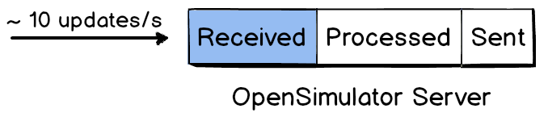Experiment 1 Motivation: Unreasonable client behavior in a virtual conference setting
Solution: Added filter early in processing stage to discard agent update packets with insignificant position update values.
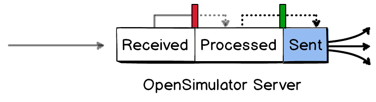Experiment 1: Experiment Design
- To control client behavior, used synthetic client bots
- To simulate conference, users enter scene and sit down
- To eliminate noise, built barebones environment
- To measure performance impact, measured steady-state server load
- To collect data, used OpenSimulator internal monitoring framework
[Gabrielova & Lopes, 2014]
Experiment 1: Experiment Setup
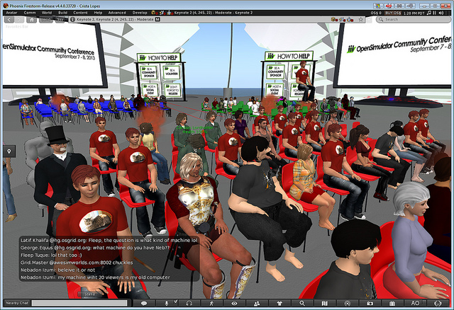
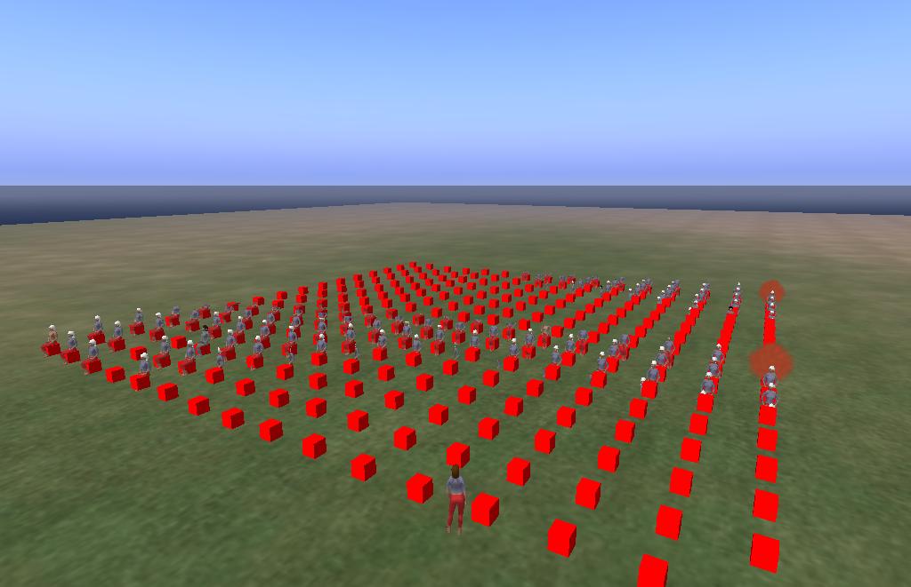
Experiment 1: Experiment Steps
- Sets of 10, 50, 100, and 200 synthetic client bots (pCampBot [Clark-Casey, 2013])
- OpenSimulator region with 256 cubes for sitting
- 3 scripted behaviors: baseline stable, unfiltered unstable, filtered stable
- Bots logged in by script and directed to sit
- Collected 3 30-minute login sessions for each of 12 configurations
Experiment 1: Findings - Server Load
Experiment 1: Findings - Agent Update Packets
Experiment 1: Lessons Learned
- Our experiments confirm that filtering optimization worked.
- Initial agent processing code is a critical code path.
- Shows one strategy by which virtual environment servers can mitigate unreasonable client behavior.
Agenda
- OpenSimulator, our platform for 3D virtual environment research
- Related work in virtual environment performance measurement
- Experiment 1: Systematic study of unreasonable client behavior
- Experiment 2: Systematic study of server performance impact upon user login
- Next Steps and Conclusion: Future research directions for improving performance of virtual environment systems
Experiment 2: Exploring Performance Impact
of User Login
User entrance into a virtual enviroment (both teleportation and login) heavily impacts network traffic [Fernandes et. al., 2007; Kinicki & Claypool, 2008]
Experiment 2: Exploring Performance Impact
of User Login
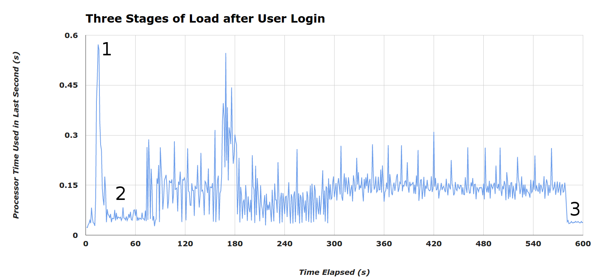
Experiment 2: Experiment Design
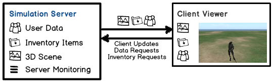Experiment 2: Experiment Design
- Independent Variables: Scene Complexity, Avatar Complexity, Inventory Size
- Dependent Variable: Privileged Processor Time
- Measure performance when user enters a scene with no cached assets
- To control complexity of the experiment, measure load of a single user
- To control simulation time, limit variables to light and heavy assets
Experiment 2: Experiment Steps
- Initiate monitoring framework
- Load scene file into OpenSimulator server (e.g., Light Scene)
- Log in account on client viewer on UCI network (e.g., Light Avatar with Heavy Inventory)
- 40 experiments: 5x 10 minutes for each combination of avatar, scene, and inventory complexity
- After 10-minute timer, clear client viewer cache
- Restart client viewer for next experiment
- After all experiments in a scene, back-up server log for mining
Experiment 2: Avatars
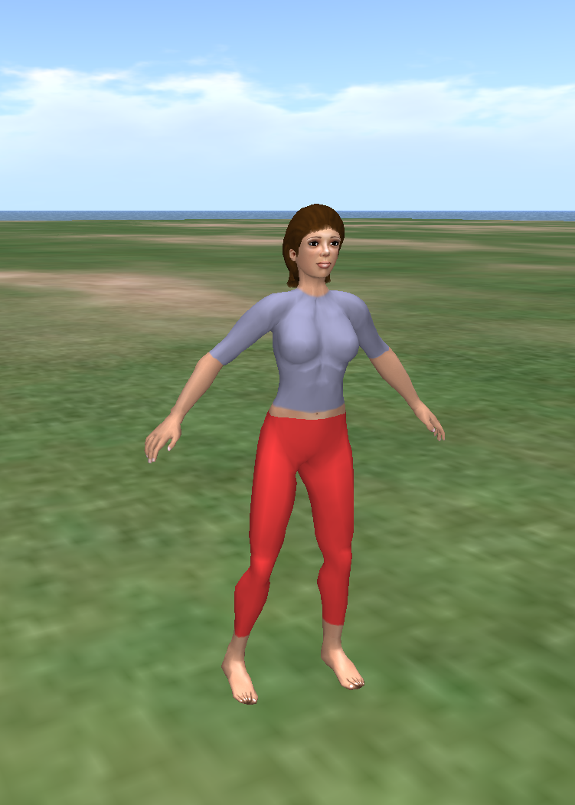Experiment 2: Scenes
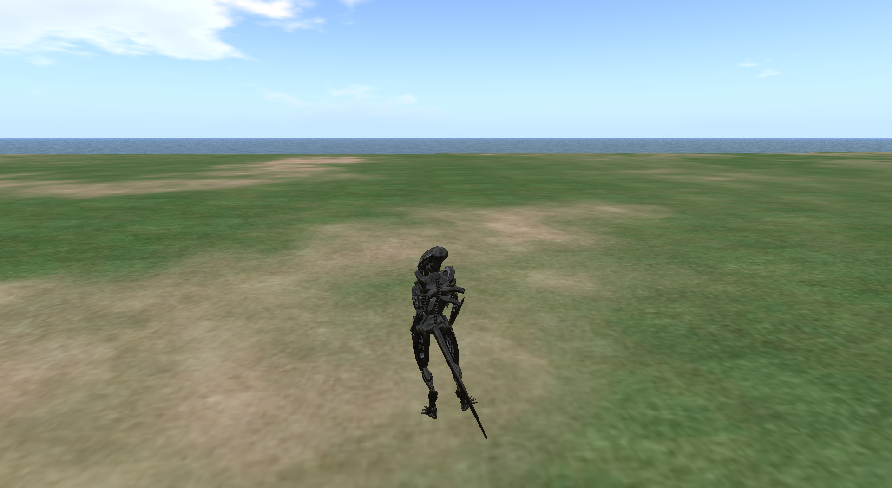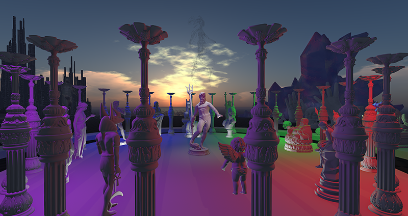Experiment 2: Performance Findings - Scenes
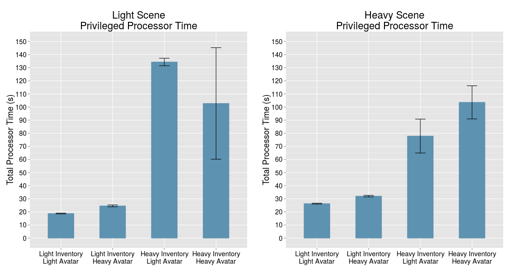Experiment 2: Performance Findings - Avatars
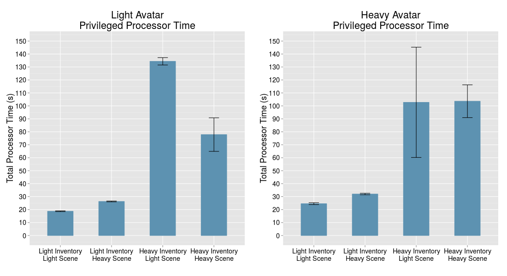Experiment 2: Performance Findings - Inventories
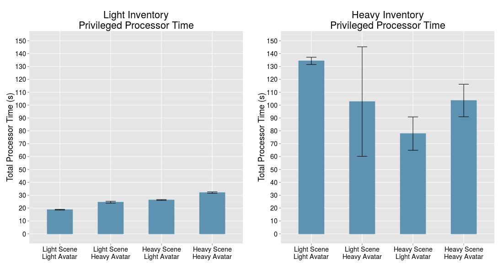Experiment 2: Follow-Up Study
with Dedicated Server
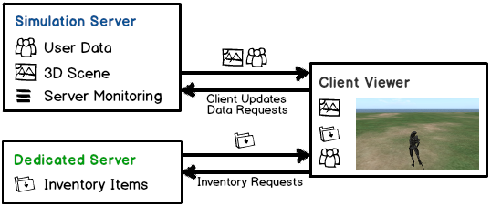
Experiment 2: Findings of Follow-up Study with Dedicated Server

Experiment 2: Exploring Performance Impact of User Login - Findings
- Manual overhead of realistic virtual environment experiments is heavy (13.3+ hours simulation time analyzed) - see also, [Fernandes et. al., 2007; Kinicki & Claypool, 2008]
- Systematic study pinpointed underlying system bug.
Agenda
- OpenSimulator, our platform for 3D virtual environment research
- Related work in virtual environment performance measurement
- Experiment 1: Systematic study of unreasonable client behavior
- Experiment 2: Systematic study of server performance impact upon user login
- Next Steps and Conclusion: Future research directions for improving performance of virtual environment systems
Research Motivation
What techniques can be used to improve performance of virtual environment servers?
✓ Systematic studies of mitigation strategies for unreasonable client resource demands.
Conclusions
- Virtual environment experiment design isn't easy!
- Systematic performance studies help pinpoint performance issues.
- Critical code paths in virtual environments can have significant performance impact.
- Automated techniques needed to address manual overhead of virtual environment experiments.
Future Work: Automating systematic performace studies of virtual environment servers
- Synthetic load test clients that cause realistic server load
- Automated systematic study workflows
- Record and replay capability for virtual environment testing
(e.g., Selenium for web applications [Bruns et. al., 2009; Holmes & Kellogg, 2006])